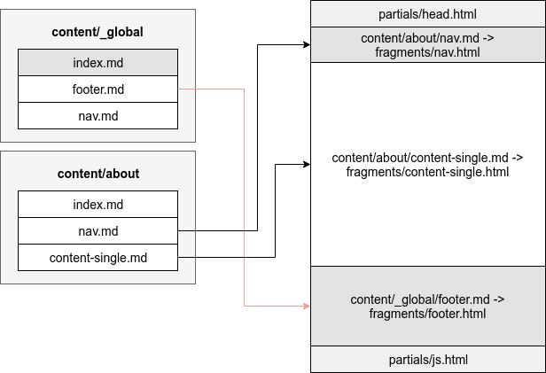

Fragments Implementation
Fragments themselves are Hugo partials that are located in layouts/partials/fragments/.
Partials built into Syna are stored within the theme’s layout directory.
Hugo enables local or per website overwrites of layouts and partials.
For more details checkout Hugo’s template lookup order.
The default layout single.html is used to render each page. For list pages we use list.html layout.
These layouts don’t need to be explicitly mentioned
The rendering code flow of Syna would do the following:
single.htmlorlist.htmllayout is called- The layout decides where the page directory is located (for list pages, it would be a
_indexdirectory next toindex.md) helpers/fragments.htmlwould find all the global fragments and all the local fragments- The process of finding all the fragments involved destructing the path to the page
- Locating all the
_global/directories in the parent directories and the current directory if the current page is a list page - Sorting the said directories from the closest to the page to the furthest, making the local fragments and nearest
_globaldirectories more important - The helper would then remove duplicate fragments (fragments with the same name or the same directory name)
- All the page fragments are registered in a Scratch and can later be used for various reasons
- The layout decides where the page directory is located (for list pages, it would be a
head.htmlpartial is rendered frombaseof.htmllayouthelpers/fragments-renderer.htmlis called- Fragments are ordered based on their
weightattribute - Fragments that are not disabled are rendered (404 fragment would not be rendered in any other page than 404)
- Fragments are ordered based on their
- A container for modal and React is added to the page in case there is any need for them
js.htmlpartial is rendered frombaseof.htmllayout

Creating new fragments
In order to create a custom fragment for your website create a new layout file named after your fragment and place it under [project_root]/layouts/partials/fragments/.
Fragments are partials and follow the same rules. If you are not familiar with partials more details are available in the Hugo documentation.